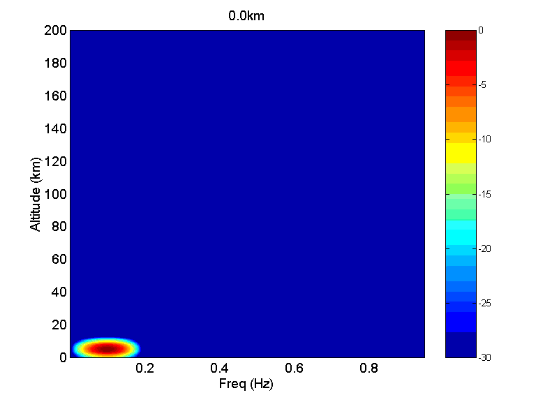

Figures 10.a and 10.b demonstrate the evolution of the spectrum as a function of altitude. These results highlight the frequency shifting and energy redistribution inherent to long-range atmospheric propagation.
Les figures 10.a et 10.b montrent l'évolution du spectre en fonction de l'altitude. Ces résultats mettent en évidence le décalage fréquentiel et la redistribution d'énergie propres à la propagation atmosphérique longue distance.

Fig. 10.a: Spectral evolution (Linear Propagation) Fig. 10.a : Évolution spectrale (Propagation Linéaire)

Fig. 10.b: Spectral evolution (Nonlinear Propagation) Fig. 10.b : Évolution spectrale (Propagation Non-linéaire)